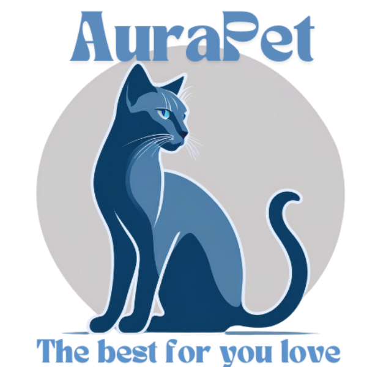

O que fazemos?

Na nossa clínica veterinária gratuita, dedicamos nosso tempo e amor ao cuidado de animais que mais precisam. Somos mais do que apenas uma clínica — somos uma equipe apaixonada por salvar vidas, oferecendo tratamento médico e resgatando animais em situação de rua. Nosso compromisso é garantir que cada animal, independentemente de sua história ou circunstância, receba atendimento veterinário de qualidade e a chance de um futuro melhor.
Atendimento Veterinário Gratuito
Oferecemos serviços veterinários gratuitos, desde consultas e vacinas até cirurgias e tratamentos especializados. Sabemos que muitos tutores enfrentam dificuldades financeiras e que os animais merecem cuidados, independentemente da capacidade de pagamento. Nosso objetivo é proporcionar saúde e bem-estar para cada animal que passa por nossas portas, ajudando-os a viver uma vida plena e saudável.
Resgate de Animais de Rua
Além do atendimento clínico, temos um forte compromisso com o resgate de animais em situação de abandono. Diariamente, percorremos as ruas em busca de animais em sofrimento, feridos ou sem lar, oferecendo-lhes a chance de serem tratados, reabilitados e, quando possível, encaminhados para adoção responsável. Trabalhamos para que esses animais voltem a confiar nas pessoas e tenham a oportunidade de viver em segurança, cercados de carinho.
Um Futuro Melhor
Nosso trabalho vai além dos cuidados médicos. Acreditamos que cada animal tem o direito a uma vida digna e estamos comprometidos em educar a comunidade sobre a importância da posse responsável, castração e do respeito aos animais. Nosso sonho é que um dia todos os animais tenham um lar amoroso e estejam livres do abandono.
Cuidar, resgatar e transformar vidas — é isso que fazemos.
Nossa missão
Nossa missão é cuidar, resgatar e transformar vidas. Buscamos oferecer atendimento veterinário gratuito de excelência, promovendo saúde e bem-estar para animais que, muitas vezes, não teriam acesso a cuidados adequados. Acreditamos que todo animal, independentemente de sua origem ou condição, merece respeito, carinho e a chance de viver uma vida plena.
Nos dedicamos ao resgate de animais em situação de rua, fornecendo abrigo, tratamento e reabilitação para aqueles que enfrentam o abandono e o sofrimento. Lutamos para que cada animal resgatado tenha a oportunidade de ser adotado por famílias responsáveis e amorosas, restabelecendo sua confiança e oferecendo um novo começo.
Além disso, nossa missão inclui conscientizar a sociedade sobre a importância da posse responsável, da castração e do respeito aos animais, criando uma cultura de proteção e compaixão. Trabalhamos incansavelmente para que, um dia, nenhum animal seja deixado para trás, e todos tenham a oportunidade de viver com dignidade.
Salvamos vidas, oferecemos cuidado e plantamos sementes de um futuro mais compassivo e justo para os animais.
Quem somos?
Clínica AuraPet
Somos uma equipe apaixonada por salvar vidas e transformar realidades, composta por veterinários, voluntários e amantes dos animais que acreditam no poder do cuidado e da compaixão. Nossa clínica veterinária gratuita foi fundada com o propósito de oferecer esperança e atendimento médico de qualidade a animais em situação de vulnerabilidade, que muitas vezes são esquecidos pela sociedade.
Mais do que um centro de tratamento, somos um refúgio para os animais de rua, um ponto de apoio para quem não pode arcar com os custos veterinários e um elo entre esses seres indefesos e um futuro melhor. Nosso trabalho é movido pelo amor e pelo compromisso de lutar por aqueles que não têm voz, oferecendo não apenas tratamento médico, mas também uma chance de recomeçar.
Todos os dias, resgatamos animais que sofrem nas ruas e nascem sem a chance de um lar seguro. Cada vida que salvamos reforça nossa missão de proteger e cuidar, oferecendo uma segunda chance por meio de reabilitação e adoção.
Somos mais que uma clínica. Somos uma família que acolhe, trata e devolve esperança a quem mais precisa. Aqui, acreditamos que todo animal merece uma vida digna, amor e respeito — e estamos determinados a tornar isso realidade.